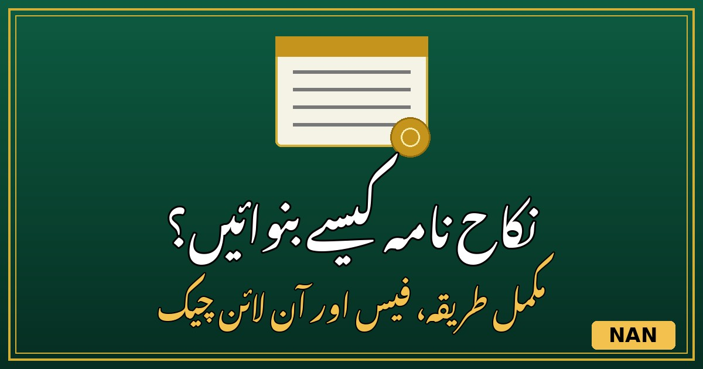

نکاح نامہ کیسے بنوائیں؟ مکمل طریقہ، فیس اور آن لائن چیک

نکاح نامہ شادی کا سب سے اہم قانونی دستاویز ہے — یہ آپ کی شادی کا سرکاری ثبوت ہوتا ہے۔ بیوی کا شناختی کارڈ بنوانے یا اس میں نام اور ازدواجی حیثیت کی تبدیلی، پاسپورٹ، ویزا، بچوں کا پیدائش کا سرٹیفکیٹ اور B-Form، وراثت کے معاملات اور بیرونِ ملک اسپانسرشپ — ہر جگہ نکاح نامہ مانگا جاتا ہے۔ مگر بہت سے لوگ نکاح کے بعد رجسٹریشن کروانا بھول جاتے ہیں، اور ضرورت پڑنے پر پریشانی ہوتی ہے۔ اس مضمون میں نکاح نامہ بنوانے کا مکمل طریقہ، درکار دستاویزات، فیس اور آن لائن چیک کا طریقہ بتایا گیا ہے۔
1۔ نکاح نامہ کیا ہے اور یہ کیوں ضروری ہے؟
نکاح نامہ وہ سرکاری فارم ہوتا ہے جس پر نکاح کے وقت دولہا، دلہن، گواہوں اور نکاح خواں کے دستخط ہوتے ہیں اور جس میں حق مہر، نکاح کی تاریخ اور دیگر تفصیلات درج ہوتی ہیں۔ پاکستان میں نکاح کی رجسٹریشن مسلم فیملی لاز آرڈیننس 1961 کے تحت لازمی ہے — نکاح کا اندراج متعلقہ یونین کونسل میں کروانا قانون کی شرط ہے۔ صرف نکاح خواں کا کاغذی نکاح نامہ کافی نہیں؛ یونین کونسل میں رجسٹرڈ کمپیوٹرائزڈ نکاح نامہ ہی سرکاری کاموں میں قبول ہوتا ہے۔ اگر نکاح نامہ رجسٹرڈ نہ ہو تو بیوی کا شناختی کارڈ، بچوں کے دستاویزات اور ویزا کی درخواستیں رک سکتی ہیں۔
2۔ نکاح کے وقت نکاح نامہ کیسے بنتا ہے؟
نکاح کے وقت لائسنس یافتہ نکاح خواں نکاح نامہ بھرتا ہے۔ اس میں دولہا اور دلہن کا نام، والد کا نام، عمر، شناختی کارڈ نمبر، پتہ، حق مہر کی رقم اور اس کی ادائیگی کی صورت، دو گواہوں کے نام اور شناختی کارڈ نمبر، اور وکیل کی تفصیلات درج کی جاتی ہیں۔ نکاح نامے کی چار کاپیاں بنتی ہیں — دولہا، دلہن، نکاح خواں اور یونین کونسل کے لیے۔ نکاح خواں کو کاپی یونین کونسل میں جمع کروانی ہوتی ہے، مگر یہ کام اکثر رہ جاتا ہے — اس لیے خود یقین کر لیں کہ رجسٹریشن ہو گئی ہے۔
3۔ نکاح نامہ بنوانے کے لیے درکار دستاویزات
یونین کونسل میں نکاح کی رجسٹریشن یا کمپیوٹرائزڈ نکاح نامہ حاصل کرنے کے لیے یہ دستاویزات تیار رکھیں: نکاح نامے کی اصل کاپی (جو نکاح خواں نے دی تھی)، دولہا اور دلہن کے شناختی کارڈ کی فوٹو کاپیاں، دونوں گواہوں کے شناختی کارڈ کی فوٹو کاپیاں، اور دولہا و دلہن کی پاسپورٹ سائز تصاویر۔ اگر نکاح کچھ عرصہ پہلے ہوا تھا تو تاریخ اور یونین کونسل کا نام درست یاد رکھیں۔ بعض یونین کونسلوں میں درخواست فارم بھی بھرنا پڑتا ہے جو وہیں سے مل جاتا ہے۔ نکاح نامہ گم ہو تو نکاح خواں کی تصدیق شدہ کاپی یا گواہوں کے حلف نامے کی ضرورت پڑ سکتی ہے — پہلے یونین کونسل سے طریقہ پوچھ لیں۔
4۔ یونین کونسل میں رجسٹریشن اور کمپیوٹرائزڈ نکاح نامہ
سب سے پہلے معلوم کریں کہ آپ کی یونین کونسل کون سی ہے — یہ عام طور پر دولہا یا دلہن کے رہائشی علاقے کی یونین کونسل ہوتی ہے، جہاں نکاح ہوا تھا۔ دستاویزات لے کر یونین کونسل کے دفتر جائیں اور سیکرٹری یا متعلقہ کلرک سے نکاح کی رجسٹریشن کی درخواست دیں۔ وہ آپ کے نکاح نامے کی تفصیلات اپنے رجسٹر میں درج کریں گے اور درخواست فارم بھر کر دستاویزات کی کاپیاں منسلک کریں گے۔ درخواست کی رسید یا ٹوکن سنبھال کر رکھیں۔ چند دن بعد یونین کونسل سے کمپیوٹرائزڈ نکاح نامہ لیں — اس پر QR کوڈ یا سیریل نمبر ہوتا ہے۔ مہر اور چیئرمین یا سیکرٹری کے دستخط لازمی چیک کریں — ان کے بغیر نکاح نامہ سرکاری کاموں میں قبول نہیں ہوتا۔ پرانے نکاح کی صورت میں بھی یونین کونسل سے کمپیوٹرائزڈ کاپی کے لیے درخواست دی جا سکتی ہے — ریکارڈ کی تصدیق کے بعد جاری کر دی جاتی ہے۔
5۔ نکاح نامے کی فیس کتنی ہے؟
نکاح نامے کی رجسٹریشن اور کمپیوٹرائزڈ کاپی کی فیس ہر صوبے اور یونین کونسل میں مختلف ہو سکتی ہے — یہ عام طور پر چند سو روپے ہوتی ہے۔ یونین کونسل میں فیس کی رسید ضرور لیں؛ بغیر رسید کے کسی کو اضافی رقم نہ دیں۔ اگر کوئی اہلکار سرکاری فیس سے زیادہ رقم مانگے تو اس کی شکایت متعلقہ ضلعی انتظامیہ یا یونین کونسل کے چیئرمین سے کی جا سکتی ہے۔ درست فیس درخواست سے پہلے یونین کونسل کے دفتر یا نوٹس بورڈ سے پوچھ لیں — فیس وقت کے ساتھ بدل سکتی ہے، اس لیے ویب سائٹ پر لکھی پرانی فیس کو حتمی نہ سمجھیں۔
6۔ نکاح نامہ آن لائن چیک کیسے کریں؟
نکاح نامے کی آن لائن تصدیق کے بارے میں ایک اہم بات جان لیں: پورے پاکستان کے لیے نکاح نامہ چیک کرنے کا کوئی ایک سرکاری آن لائن پورٹل عام عوام کے لیے موجود نہیں ہے۔ بعض صوبوں میں مقامی سسٹم موجود ہیں، مگر ہر علاقے میں دستیاب نہیں۔ اس لیے اگر کوئی ویب سائٹ یا ایجنٹ "آن لائن نکاح نامہ چیک" یا "آن لائن نکاح نامہ بنوانے" کا دعویٰ کرے تو محتاط رہیں — وہ فراڈ ہو سکتا ہے۔ تصدیق کے لیے متعلقہ یونین کونسل یا نادرا کے قریبی دفتر سے رابطہ کریں۔ کسی بھی نامعلوم ویب سائٹ پر اپنا شناختی کارڈ نمبر یا ذاتی تفصیلات کبھی درج نہ کریں۔
7۔ نکاح نامے میں غلطی کی اصلاح اور بیرونِ ملک استعمال
نکاح نامے میں نام کی اسپیلنگ، تاریخ یا حق مہر کی رقم میں غلطی عام بات ہے۔ اصلاح کے لیے متعلقہ یونین کونسل میں درخواست دیں — درخواست کے ساتھ اصل نکاح نامہ، دونوں میاں بیوی کے شناختی کارڈ اور غلطی کی وضاحت منسلک کریں۔ چھوٹی غلطیوں کی اصلاح یونین کونسل خود کر دیتی ہے، مگر بعض صورتوں میں نادرا کی تصدیق یا حلف نامہ درکار ہو سکتا ہے۔ اصلاح کے بعد نیا کمپیوٹرائزڈ نکاح نامہ جاری کیا جاتا ہے۔ نکاح نامہ لیتے وقت اس کی تمام تفصیلات وہیں چیک کر لیں — نام، تاریخ، حق مہر اور شناختی کارڈ نمبر — تاکہ بعد میں دوبارہ چکر نہ لگانے پڑیں۔ ویزے یا بیرونِ ملک اسپانسرشپ کے لیے کمپیوٹرائزڈ نکاح نامہ لے کر ضلعی دفتر اور وزارتِ خارجہ سے تصدیق (اٹیسٹیشن) کروائیں۔ بعض سفارت خانے انگریزی ترجمہ بھی مانگتے ہیں — مستند مترجم سے کروا کر اس کی بھی تصدیق کروائیں۔ روانگی سے پہلے وزارتِ خارجہ سے تازہ معلومات ضرور لے لیں۔
8۔ عام غلطیاں اور فراڈ سے بچاؤ
نکاح کے فوراً بعد رجسٹریشن نہ کروانا سب سے بڑی غلطی ہے — یہ کام مہینوں یا سالوں تک لٹکانے سے بعد میں ریکارڈ ملنا مشکل ہو جاتا ہے۔ ایجنٹ کو پیسے دے کر کام سونپنا دوسری غلطی ہے — یونین کونسل کا کام خود کریں۔ غیر رجسٹرڈ نکاح خواں سے نکاح کروانا بھی خطرناک ہے — ہمیشہ لائسنس یافتہ نکاح خواں سے نکاح کروائیں اور اس کا لائسنس نمبر نکاح نامے پر درج کروائیں۔ سوشل میڈیا پر "گھر بیٹھے نکاح نامہ" کے اشتہارات سے ہوشیار رہیں — سرکاری دستاویزات صرف سرکاری دفاتر سے ہی بنتی ہیں۔ نکاح نامے کی اصل کاپی اور کمپیوٹرائزڈ کاپی دونوں سنبھال کر رکھیں، اور ان کی اسکین کاپیاں موبائل اور ای میل میں محفوظ کر لیں۔
9۔ اکثر پوچھے جانے والے سوالات
سوال: نکاح نامہ بنوانے میں کتنا وقت لگتا ہے؟
جواب: اگر تمام دستاویزات مکمل ہوں اور ریکارڈ موجود ہو تو کمپیوٹرائزڈ نکاح نامہ عام طور پر چند دن میں مل جاتا ہے۔ پرانے یا غیر رجسٹرڈ نکاح کی صورت میں ریکارڈ کی تصدیق میں کچھ ہفتے بھی لگ سکتے ہیں۔
سوال: کیا نکاح نامہ کے بغیر بیوی کا شناختی کارڈ بن سکتا ہے؟
جواب: بیوی کے شناختی کارڈ میں ازدواجی حیثیت اور شوہر کا نام درج کروانے کے لیے کمپیوٹرائزڈ نکاح نامہ درکار ہوتا ہے — اس کے بغیر نادرا یہ تبدیلی نہیں کرتا۔
نکاح نامہ صرف ایک کاغذ نہیں — یہ آپ کے خاندان کی شناخت اور قانونی حقوق کی بنیاد ہے۔ رجسٹریشن کو نظر انداز نہ کریں؛ ابھی تک نہیں کروائی تو آج ہی یونین کونسل سے رابطہ کریں، اور یہ مضمون اپنے عزیزوں سے شیئر کریں۔